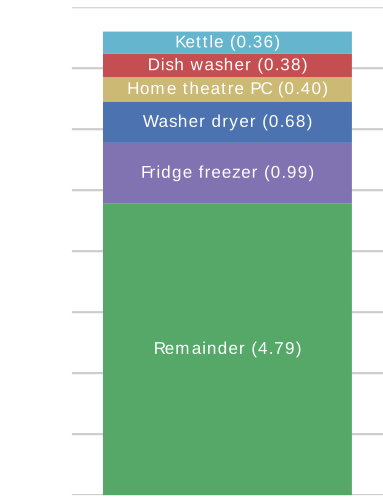

Data Interpretation
Energy Disaggregation
Jack Kelly
jack.kelly@imperial.ac.uk
What is Energy Disaggregation?
Aggregate Energy Bill

Itemised Energy Bill



Why bother with disaggregation?
GB Smart Meter Roll-out
- All homes to have a smart meter by 2020.
- The business case assumes that smart meters will drive savings of £4.6 billion due to reduced energy consumption (across both electricity and gas).
- Aggregate data alone unlikely to lead to such savings.
- Disaggregation has been demonstrated to drive savings more effectively than aggregate data alone.
My Work
- First to apply deep neural nets to energy disaggregation
Recurrent Neural Nets
Example Output from Deep Neural Net
Autoencoder
My Work
- First to apply deep neural nets to energy disaggregation
- Lead developer on open source disaggregation tool NILMTK
- Collected & released disaggregated energy dataset: UK-DALE
- NILM Metadata: metadata schema for energy data
- Used by > 9 datasets
Questions?
jack.kelly@imperial.ac.ukMetrics on Unseen Appliances
Deep Neural Nets
ImageNet Large Scale Visual Recognition Challenge (ILSVRC)

From: Krizhevsky, Sutskever & Hinton. ImageNet Classification with Deep Convolutional Neural Networks. NIPS (2012)

Image from devblogs.nvidia.com
Krizhevsky et al.'s DNN Results on ImageNet 2012

Krizhevsky, Sutskever & Hinton. ImageNet Classification with Deep Convolutional Neural Networks. NIPS (2012)
Recurrent Neural Nets
Denoising Autoencoders
Bounding Rectangle
Example Output from Deep Neural Net
LSTM
Autoencoder
Rectangles